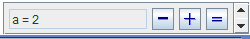

Une variable est une valeur numérique réelle comprise entre une valeur minimale et une valeur maximale et définie par un pas d'incrémentation.
La valeur renvoyée par la variable est la valeur actuelle.
On crée une variable à l'aide du menu Calculs - Nouvelle variable (raccourci Ctrl + V).
On peut modifier une variable avec le menu Modifier -Formule (raccourci clavier Ctrl + i)
Dans la boîte de dialogue de création d'une variable il est possible de demander de lui associer un dialogue comme ci-dessous.
Dans ce cas,en bas et à droite de la figure se trouvera une boîte de dialogue spéciale permettant d'incrémenter la variable (bouton +), de la décrémenter (bouton -) ou de modifier sa valeur actuelle (bouton =).
.
Il est possible de demander un dialogue pour plusieurs variables.
Une variable peut servir à générer un lieu de points reliés, un lieu de points non reliés ou un lieu d'objets.
Une variable peut aussi servir à créer une macro :
Created with the Personal Edition of HelpNDoc: Full featured multi-format Help generator